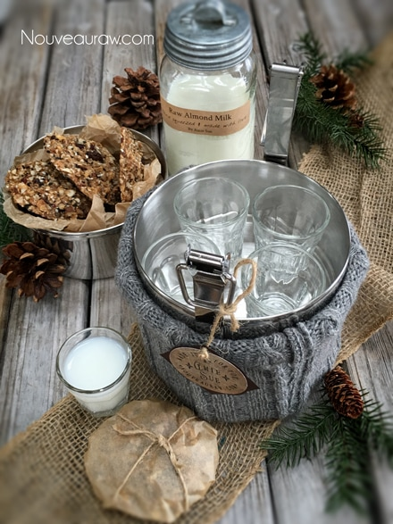
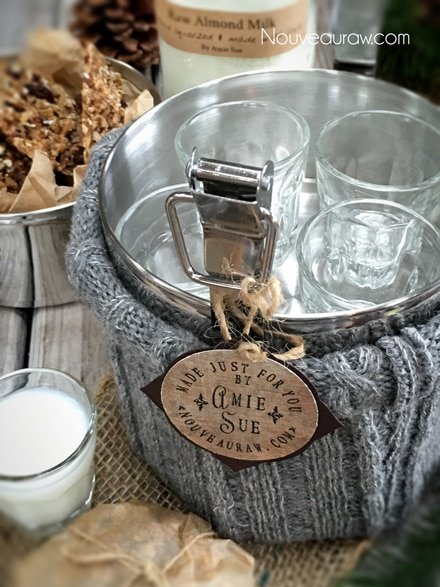

Abso-FIG-ing-lutely Cookies
~ raw, vegan, gluten-free ~
These cookies are (mom, plug your ears)… they are Abso-FIG-ing-lutely delicious! Crunchy on the outside, chewy on the inside, what more could you ask for out of a cookie? Ok, yea, dipped in chocolate that would be good too. :)
This recipe calls for the nuts, seeds, and oats to be soaked. If you are one of those raw-do-gooders and already have them soaked, dehydrated, and in storage… you can use them without re-soaking. You will just need to add a little extra water to the batter so it holds together, so be aware of that.
If you want to make this recipe nut-free, swap out the nuts for seeds. And if you can’t eat oats, try soaked and sprouted buckwheat. I haven’t tried them with these alternate ingredients but I am sure they would still taste Abso-FIG-ing-lutely delicious.
I am a great fan of figs but I was pleasantly surprised to find that I almost enjoyed the brightness of the pineapple even more so. If you are having to purchase dried pineapple, make sure it is sulfur-free, sugar-free… just plain ole’ jane pineapple. I found cutting the rings with scissors much easier than with a knife. The knife kept getting gummed up which makes it appear dull and a dull knife is dangerous.
When storing these cookies, keep them in the fridge or freezer… to extend their shelf-life. When you place them in an airtight container, layer them in a single layer with parchment paper in between layers. Or better yet, wrap each one individually in parchment paper so they can be easily grabbed and thrown into the lunch box.
For gift-giving, I used a 3 tier stainless bento container. They come in many different shapes and sizes. I then took an old sweater and made a sleeve for it, giving it that warm, rustic look. Filled with raw cookies… that is one heck of a present. :) Well, you best get busy, don’t let me hold you up. Blessings and joy, amie sue
yields 24 cookies (1/4 cup each)
- 4 cups raw, gluten-free rolled oats, soaked
- 1 1/2 cups raw mixed nuts, rough chopped, soaked
- 1/3 cup raw sunflower seeds, soaked
- 1/4 cup raw sesame seeds, soaked
- 1 cup diced dried figs
- 1 cup diced dried natural pineapple
- 1/2 cup raisins
- 1/2 cup shredded dried coconut
- 1/2 cup packed Medjool dates, pitted
- 1/2 cup raw honey or liquid sweetener
- 1/3 cup hot water
- 1/4 cup cold-pressed coconut oil, melted
- 1 Tbsp vanilla extract
- 2 tsp ground Ceylon cinnamon
- 1/2 tsp ground nutmeg
- 1/2 tsp ground cloves
- 1/4 tsp Himalayan pink salt
Preparation:
- Regarding oats. The important step with oats is to soak them overnight to remove the phytic acid that impairs digestion. Please see the link above for this step. After the soaking process be sure to rinse them until the water runs clear. Squeeze out all the excess water.
- Drain and rinse the nuts and seeds, placing them in a large bowl along with the oats, figs, pineapple, raisins, and coconut.
- If the dried fruits are really dry, rehydrate them in enough warm water to cover them. You can do this in one bowl.
- Once soft, drain and hand-squeeze the excess water from them before adding the bowl of nuts/seeds/oats.
- Mix everything together.
- Combine the dates, sweetener, water, coconut oil, vanilla, cinnamon, nutmeg, cloves, and salt in a food processor fitted with the “S” blade and mix well.
- You will notice that I called for hot water above in the “wet ingredient list”. I used hot water to help bring the honey and coconut oil together.
- Pour the wet mixture over the ingredients waiting in the bowl, mixing until everything is well coated.
- Using a 1/4 cup cookie scoop, drop the cookie batter onto the teflex sheets that come with the dehydrator.
- If you don’t have those you can use parchment paper, but don’t use wax paper because they will stick to it.
- I do 9 per tray, leaving space in between the cookies. Once a tray is filled, grab the two bottom corners and lightly tap the tray on the counter, do this a few times on each edge. This will slightly flatten the cooking, giving it that perfect cookie shape and the appearance of being cooked.
- Dehydrate at 145 degrees (F) for about 1 hour, reduce heat to 115 degrees (F) for about 4 hours, then move the cookies on the mesh screens that comes with the dehydrator.
- Continue drying for about 16 hours or until desired dryness is reached. I like my cookies moist on the inside.
- Once done and cooled, store the granola in airtight containers.
- You can keep it on the countertop for walk-by munching or it can be stored in the fridge or freezer to extend the shelf life.
- On the counter, it should be good for several weeks if it lasts that long!
The Institute of Culinary Ingredients™
- To learn more about maple syrup by clicking (here).
- Dates are an amazing ingredient for raw food recipes, click (here) to read why.
- Why do I specify Ceylon cinnamon? Click (here) to learn why.
- What is Himalayan pink salt and does it really matter? Click (here) to read more about it.
- Are oats gluten-free? Yes, read more about that (here).
- Are oats raw? Yes, they can be found. Click (here) to learn more.
- Do I need to soak and dehydrate oats? Not required but recommended. Click (here) to see why.
Culinary Explanations:
- Why do I start the dehydrator at 145 degrees (F)? Click (here) to learn the reason behind this.
- When working with fresh ingredients it is important to taste test as you build a recipe. Learn why (here).
- Don’t own a dehydrator? Learn how to use your oven (here). I do however truly believe that it is a worthwhile investment. Click (here) to learn what I use.

I love these three tier tins. Place napkins in the bottom, glasses
in the center (f0r almond milk) and cookies on top! A great gift.

© AmieSue.com